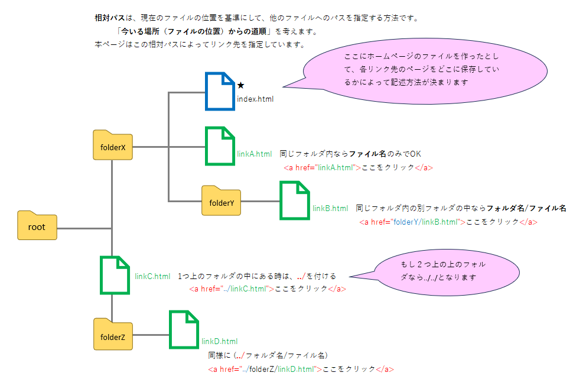

この部分です
1️⃣≪準備≫
先に準備として、設置したいものがあります
最初にindex.htmlのページを作った時、↓こうなっていましたね。
この後、以下の様にbodyの中に、
ヘッダー(<header>)、メイン(<main>)、フッター(<footer>)を追加します。
後で飾りつけの設定では｢CSSプログラムを記述する｣という行程が発生しますが、その際に、
ページの冒頭は<header>
ページの主な中身は<main>
ページの締めは<footer>
に、それぞれグループ化してまとめてフォントの設定をする事が可能になるためです。
ページの主な中身は<main>
ページの締めは<footer>
グループでまとめたとしても、その中の一部だけ変更したい所があれば、後ほどクラス名や他タグを付けるという編集も可能なのでご安心ください！
1️⃣-1 本ページの場合、ヘッダー＝ページの冒頭には｢このページの作り方｣の部分が該当しますので、
<header>タグを入力する場所は、先程記述した<h1>このページの作り方</h1>を囲むようにします。
この時インデントもしておきます。
1️⃣-2 その下に、<main>タグを入力したいので、<p>はじめてWebページを作成する方へ～の前に<main>を追記します。
</header>の下を1行空けると見やすいですね
1️⃣-3 今まで書いていた文章の後に、</main>タグを入力して閉じたら、
そのまま続けて(1行空けて)<footer>タグも追加しておきます
1 <!DOCTYPE html>
2 <html>
3 <head>
4 <meta charset="UTF-8">
5 <title>あなたが付けたタイトル</title>
6 </head>
7 <body>
8 <header>
9 <h1>このページの作り方</h1>
10 </header>
11
12 <main>
13 <p>はじめてWebページを作成する方へ<br>
14 ここではWebページを作成するにあたって、基本的なノウハウを以下の通りリストアップしました。<br>
15 ぜひリンクに飛び、ご活用ください。<br>
16 (本ページではEclipseという統合開発環境を使用しています)
17 </p>
18 </main>
19
20 <footer>
21
22 </footer>
23
24 </body>
25 </html>
1️⃣-4 ポイント
ここでコメントの入力についてお伝えします！
｢○○.html｣のプログラムにコメントを残すには、『<!-- コメント -->』と、<!-- と --> で囲んで書きます！
今追加した各タグの前後に、分かり易くするために下記の様にコメントを追加してみましょう！
コメントはブラウザには表示されませんが、HTMLファイルを「表示→ソース」で見たり、F12を押下すると見えるので、機密情報は書かないようにしましょう！
1 <!DOCTYPE html>
2 <html>
3 <head>
4 <meta charset="UTF-8">
5 <title>あなたが付けたタイトル</title>
6 </head>
7 <body>
8 <!-- ヘッダーここから -->
9 <header>
10 <h1>このページの作り方</h1>
11 </header>
12 <!-- ヘッダーここまで -->
13
14 <!-- メインコンテンツ -->
15 <main>
16 <p>はじめてWebページを作成する方へ<br>
17 ここではWebページを作成するにあたって、基本的なノウハウを以下の通りリストアップしました。<br>
18 ぜひリンクに飛び、ご活用ください。<br>
19 (本ページではEclipseという統合開発環境を使用しています)
20 </p>
21 </main>
22
23 <!-- フッターここから -->
24 <footer>
25
26 </footer>
27 <!-- フッターここまで -->
28
29 </body>
30 </html>
1️⃣-5 もう少しだけ追加します。
この後追加するリストは、ナビゲーションの要素を持ちますので、更に<nav>を追加しておきたいと思います。
ナビゲーションとは、Webサイトの他の主要なページへのリンクが複数並んだ部分のことです。
今回は<main>の、今まで書いてきた文字の下に(インデントして)入れましょう！
ちなみにナビゲーションはページのどこにでも置けますが、一般的にはヘッダー(<header>)にあることが多いです。
1 <!DOCTYPE html>
2 <html>
3 <head>
4 <meta charset="UTF-8">
5 <title>あなたが付けたタイトル</title>
6 </head>
7 <body>
8 <!-- ヘッダーここから -->
9 <header>
10 <h1>このページの作り方</h1>
11 </header>
12 <!-- ヘッダーここまで -->
13
14 <!-- メインコンテンツ -->
15 <main>
16 <p>はじめてWebページを作成する方へ<br>
17 ここではWebページを作成するにあたって、基本的なノウハウを以下の通りリストアップしました。<br>
18 ぜひリンクに飛び、ご活用ください。<br>
19 (本ページではEclipseという統合開発環境を使用しています)
20 </p>
21
22 <!-- ナビゲーション -->
23 <nav>
24
25 </nav>
26 </main>
27
28 <!-- フッターここから -->
29 <footer>
30
31 </footer>
32 <!-- フッターここまで -->
33
34 </body>
35 </html>
2️⃣それではここから、リストを<nav>タグの中に入力しましょう！
リストにしたい文字自体は<li> ～ </li>の間に入力しますが、その前に
箇条書きリストにしたい場合は<ul> ～ </ul>で囲み、
番号付きリストにしたい場合は<ol> ～ </ol>で囲みます。
1 <!DOCTYPE html>
2 <html>
3 <head>
4 <meta charset="UTF-8">
5 <title>あなたが付けたタイトル</title>
6 </head>
7 <body>
8 <!-- ヘッダーここから -->
9 <header>
10 <h1>このページの作り方</h1>
11 </header>
12 <!-- ヘッダーここまで -->
13
14 <!-- メインコンテンツ -->
15 <main>
16 <p>はじめてWebページを作成する方へ<br>
17 ここではWebページを作成するにあたって、基本的なノウハウを以下の通りリストアップしました。<br>
18 ぜひリンクに飛び、ご活用ください。<br>
19 (本ページではEclipseという統合開発環境を使用しています)
20 </p>
21
22 <!-- ナビゲーション -->
23 <nav>
24 <lu>
25 <li>①はじめに</li>
26 <li>②ロゴ・見出しの作り方</li>
27 <li>③(ここ、)リンクの作成</li>
28 <li>④画像挿入</li>
29 <li>⑤テキスト編集</li>
30 </lu>
31 </nav>
32 </main>
33
34 <!-- フッターここから -->
35 <footer>
36
37 </footer>
38 <!-- フッターここまで -->
39
40 </body>
41 </html>
★文字自体はこれで表示はできるのですが、ここからその文字が押下された時に、各リンク先ページに飛ぶ設定を行います★
3️⃣まず前提として、リンク先のページは「○○.html」という別のファイルを設ける必要があります。
最初にホームのページを作成した要領で、同じ場所に、「作りたいリンク先のページ.html」(→①)を作りたいリンクの数だけ新規作成しましょう！
本ページでは5つのリンク先ページを作っています
4️⃣ホームページのリンクを押下した時に、①で作った各ページに飛ぶ設定をします。
リンクを設定するには<a> ～ </a>を使用します。
構文としては『<a href="リンク先">このリンクをクリック</a>』です。
このリンクをクリック の部分には、リンクするコンテンツ(クリックする部分)を書きます。
リンク先は、以下3種類となります。
・サイト内リンク(サイト内の他のページへリンクする)
・外部サイトへのリンク(他のサイトのページにリンクする)
・ページ内リンク(リンク先が自分のページ)
本ページは「サイト内リンク」で作成しています。
サイト内リンクの場合の"リンク先"
①で、ホームページと同じ場所にリンク先のページ(-以降※1)を新規作成した場合には、
『<a href="リンク先">○○○</a>』の"リンク先"に入るのはフォルダ名のみでOKです。
もしも、違うフォルダに作った場合、
※1を保存した場所と同じ場所にフォルダがあり、その中にリンク先を作っている場合には『フォルダ名/ファイル名』です。
※1を保存したフォルダとは違うフォルダに存在する場合には、※1の保存場所から『../』で1つ親のフォルダに遡ります。
2つ遡る場合には『../../』です。
例えば、index.htlmを『root』の中にある『folderX』というフォルダに保存。リンク先(※1)を以下"A"、"B"、"C"、"D"に保存した場合の各記述方法は以下のようになります。
『<a href="linkA.html">リンクA</a>』
『<a href="folderY/linkB.html">リンクB</a>』
『<a href="../linkC.html">リンクC</a>』
『<a href="../../folderZ/linkD.html">リンクD</a>』
以上を踏まえて、前回までのプログラムに以下の通り追記すると、下の様なページが完成します↓
1 <!DOCTYPE html>
2 <html>
3 <head>
4 <meta charset="UTF-8">
5 <title>あなたが付けたタイトル</title>
6 </head>
7 <body>
8 <!-- ヘッダーここから -->
9 <header>
10 <h1>このページの作り方</h1>
11 </header>
12 <!-- ヘッダーここまで -->
13
14 <!-- メインコンテンツ -->
15 <main>
16 <p>はじめてWebページを作成する方へ<br>
17 ここではWebページを作成するにあたって、基本的なノウハウを以下の通りリストアップしました。<br>
18 ぜひリンクに飛び、ご活用ください。<br>
19 (本ページではEclipseという統合開発環境を使用しています)
20 </p>
21
22 <!-- ナビゲーション -->
23 <nav>
24 <lu>
25 <li><a href="first.html">①はじめに</a></li>
26 <li><a href="logo.html">②ロゴ・見出しの作り方</a></li>
27 <li><a href="link.html">③(ここ、)リンクの作成</a></li>
28 <li><a href="img.html">④画像挿入</a></li>
29 <li><a href="text.html">⑤テキスト編集</a></li>
30 </lu>
31 </nav>
32 </main>
33
34 <!-- フッターここから -->
35 <footer>
36
37 </footer>
38 <!-- フッターここまで -->
39
40 </body>
41 </html>